F1
Fundação
Base do site e identidade visual da marca.
- Tema próprio com as cores e fontes da Diretiva Patrimonial
- Página inicial (Home) completa, com destaque para contratos públicos
- Cabeçalho, rodapé e botão de WhatsApp

Acompanhamento do projeto
Painel de progresso do site institucional, fase por fase. Esta página é atualizada conforme o projeto avança.
Última atualização: 08/06/2026
3 de 5 fases concluídas · blog no ar com artigos, imagens e SEO técnico
Base do site e identidade visual da marca.
Todas as páginas institucionais do site.
Blog no ar com artigos, imagens e base técnica de SEO.
Os contatos do site viram registros — não se perdem.
Site no ar para o público — e finalização do SEO.
Sobre o SEO: a base técnica é construída nas fases 3 e 4, mas SEO completo é um processo. A finalização (HTTPS, Google Search Console, Analytics e Google Meu Negócio) acontece na publicação (Fase 5), e a otimização de conteúdo e autoridade é contínua. Não significa "1º lugar garantido".